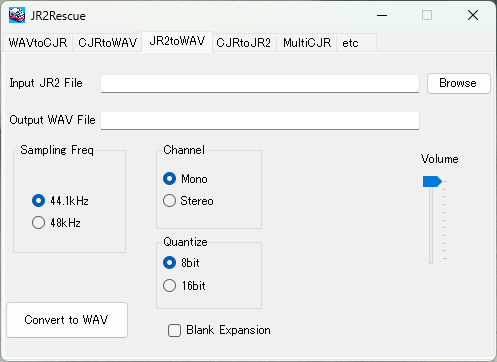
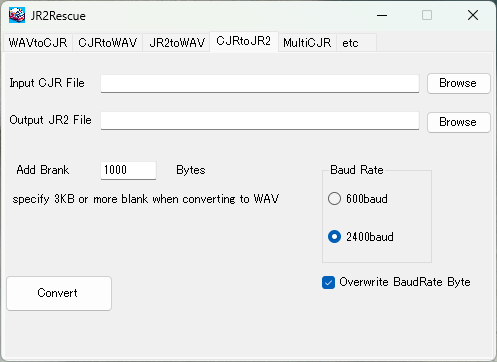

JR2Rescue
JR2Rescue is free software that converts WAV files recorded with programs on JR-200 to CJR format and other formats.
- Operation Environment : .net Framework 3.5 or later
- Readable WAV file : sampling frequency 22kHz-48kHz, quantize 8bit or 16bit, channel 1 or 2. liner PCM only.
* This program has not been fully tested. I do not intend to have a harmful effect on the user environment, but I will not compensate for any damage. Please use it after understanding.
* Latest version 0.4.1
2020.8.15 https://github.com/find-jr200/JR2Rescue/blob/main/JR2Rescue0_4_1.zip (47KB)
File Composition
JR2Rescue.exe - Executable file
ja (folder) - Japanese resource folder. If You use JR2Rescue in English environment, remove this folder.
Operation
1. WAV to CJR
Convert wav file to CJR, BIN, motrola S format.

1. Specify the input WAV file and press "Read WAV". If the dialog "failed" appears, WAV analysis has failed, so try changing the saturation and threshold levels.
2. If "Read WAV" is successful, the "Write File" button will be enabled. Select the output format and click the "Write File" button. You can also write different formats in quick succession.
* "Mot.S" is Motorola S format. If you choose this format, specify start address ( 0 - ffff).
2. CJR to WAV
Convert CJR file to WAV file.
Please specify the source file as the input CJR file and the output file as the WAV file, select 600baud / 2400baud and press "Convert to WAV"
* Notice
The output WAV format is 22KHz, 8bit, monaural fixed.
3. JR2toWAV
Convert JR2 to WAV

Please specify the input file as the input CJR file and the output file as the WAV file, press "Convert to WAV"
* Notice
The output WAV format is 22KHz, 8bit, monaural fixed.
4. CJR to JR2
Convert CJR file to JR2 file.

* What's JR2 Format
See about JR2 Format
* About output file
When you specify a file that exist, append to the end.
When you specify a file that does not exist, create new file.
If you want to create a new one, enter the full path in the text box directly, or press "Browse" to select a folder and enter the file name to create in the file name box.
* Add blank
"Add blank" is necessary for those that cannot be loaded normally without adding a blank (e.g. Swashbuckler) . When you convert these games to JR2 format, specify at least 1000 to 1500 bytes or more blanks.
5. Multi CJR
* What's Multi CJR
Multi CJR file is the file which merge separated area (e.g. text vram and attribute vram, machine language and user defined character area). However, you can't merge BASIC program (SAVEd file) and Machine Language(MSAVEd file). You can only merge MSAVEd files.
1. Drag and drop the MSAVE CJR file to the list box. To delete a file, select it and press the Delete key. You can drop multiple files, but a BASIC file (=saved file) will result in an error when writing.
2. Specify the multi CJR file name and JR file name, and then click Write Multi CJR File.
6. etc
1. Convert memory image file to BASIC CJR file.
2. Convert BIN file to CJR file.

[TOP PAGE]